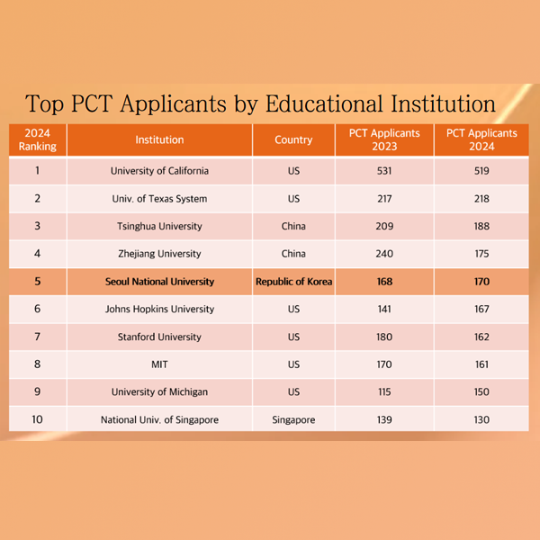

관악에 울려 퍼지는 봄의 록 스피릿: 관악 AMP UP을 만나다
서울대학교 최초의 공식 록 페스티벌 ‘관악 AMP UP’이 1일(화)부터 2일(수)까지
양일간 관악캠퍼스 버들골 풍산마당에서 열렸다.
관악에 울려 퍼지는 봄의 록 스피릿: 관악 AMP UP을 만나다
서울대학교 최초의 공식 록 페스티벌 ‘관악 AMP UP’이 1일(화)부터 2일(수)까지
양일간 관악캠퍼스 버들골 풍산마당에서 열렸다.

서울대, 국제특허출원 대학 순위 세계 5위 기록
서울대학교가 세계지식재산기구(WIPO)가 최근 발표한 2024년
국제특허출원(PCT, Patent Cooperation Treaty) 대학 순위에서 세계 5위를 차지했다.
mRNA 백신 작동원리 세계 최초 규명
새로운 치료 플랫폼으로 주목받고 있는 mRNA 백신을 더욱 효과적이고 안정적으로
개발할 수 있는 실마리를 생명과학부 김빛내리 석좌교수 연구팀이 밝혀냈다.
 숲을 위한 작은 실천, 학생들이 만든 ‘푸른 상점’
경북 의성에서 발생해 강풍을 타고 확산된 산불의 피해 복구를 돕기
위한 ‘FO:RESTORE, 숲을 되살리는 푸른 상점’ 캠페인이 지난 10일과 11일 문화관 중강당
앞에서 열렸다.
숲을 위한 작은 실천, 학생들이 만든 ‘푸른 상점’
경북 의성에서 발생해 강풍을 타고 확산된 산불의 피해 복구를 돕기
위한 ‘FO:RESTORE, 숲을 되살리는 푸른 상점’ 캠페인이 지난 10일과 11일 문화관 중강당
앞에서 열렸다.